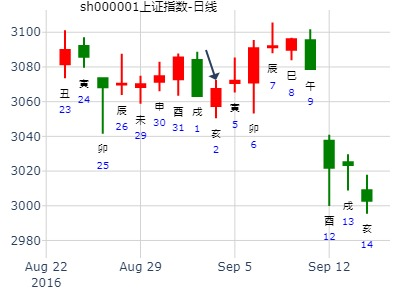
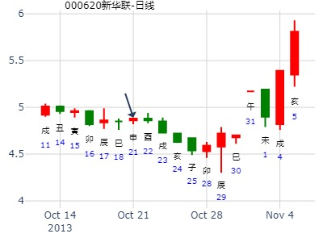

占事：嘉应未来二周
时间: 2022-01-08 8：38
干支: 辛丑年辛丑月辛酉日壬辰时 (旬空: 子丑 )
地山谦 艮为山
六神 伏神 本 卦 变 卦
腾蛇 ▅▅ ▅▅ 兄弟酉金 Ｘ→ ▅▅▅▅▅ 妻财寅木 世
勾陈 ▅▅ ▅▅ 子孙亥水 世 ▅▅ ▅▅ 子孙子水
朱雀 ▅▅ ▅▅ 父母丑土 ▅▅ ▅▅ 父母戌土
青龙 ▅▅▅▅▅ 兄弟申金 ▅▅▅▅▅ 兄弟申金 应
玄武 妻财卯木▅▅ ▅▅ 官鬼午火 应 ▅▅ ▅▅ 官鬼午火
白虎 ▅▅ ▅▅ 父母辰土 ▅▅ ▅▅ 父母辰土
上六：鸣谦，利用行师，征邑国。
主帖标题: 沪深300下周走势如何
辛丑年庚寅月庚子日庚辰时 (辰巳空) 辛丑年正月初十(2021/02/21 08:48:10)
地山谦 艮为山
腾蛇 兄弟酉金 × 妻财寅木 ／ 艮
勾陈 子孙癸亥 ∥ 兑 子孙子水 ∥
朱雀 父母丑土 ∥ 父母丙戌 ∥
青龙 兄弟申金 ／ 兄弟申金 ／ 应
妻财卯木：玄武 官鬼午火 ∥ 应 官鬼午火 ∥
白虎 父母辰土 ∥ 父母辰土 ∥
主帖标题: 博主超级快枪手预测大盘走势！
预测2011年3月份股市行情得卦象如下：
公历起卦时间：2011年3月2日18时21分
干支：辛卯年 庚寅月 丙辰日 丁酉时 （日空：子丑）
兑宫：地山谦 艮宫：艮为山 (六冲)
六神 伏神 本 卦 变 卦
青龙 兄弟癸酉金 ▅▅ ▅▅ ╳→ 妻财丙寅木 ▅▅▅▅▅ 世
玄武 子孙癸亥水 ▅▅ ▅▅ 世 子孙丙子水 ▅▅ ▅▅
白虎 父母癸丑土 ▅▅ ▅▅ 父母丙戌土 ▅▅ ▅▅
腾蛇 兄弟丙申金 ▅▅▅▅▅ 兄弟丙申金 ▅▅▅▅▅ 应
勾陈 妻财丁卯木 官鬼丙午火 ▅▅ ▅▅ 应 官鬼丙午火 ▅▅ ▅▅
朱雀 父母丙辰土 ▅▅ ▅▅ 父母丙辰土 ▅▅ ▅▅
大黑山(4月6～10日)之行情涨跌
起卦方式：报数起卦 (16,15) 动爻加时辰
公历时间：2009年4月3日20时36分
干支：己丑年 丁卯月 戊寅日 壬戌时 旬空： 申酉
兑宫：地山谦 艮宫：艮为山（六冲）
六神 伏 神 【本 卦】 【变 卦】
朱雀 ▄▄ ▄▄ 兄弟癸酉金 X-> ▄▄▄▄▄ 妻财丙寅木 世
青龙 ▄▄ ▄▄ 子孙癸亥水 世 ▄▄ ▄▄ 子孙丙子水
玄武 ▄▄ ▄▄ 父母癸丑土 ▄▄ ▄▄ 父母丙戌土
白虎 ▄▄▄▄▄ 兄弟丙申金 ▄▄▄▄▄ 兄弟丙申金 应
螣蛇 妻财丁卯木 ▄▄ ▄▄ 官鬼丙午火 应 ▄▄ ▄▄ 官鬼丙午火
勾陈 ▄▄ ▄▄ 父母丙辰土 ▄▄ ▄▄ 父母丙辰土
2014年10月马后炮:
2.申酉冲寅卯财暗动（月生旺），大涨。
谦之艮，兄动化财,先跌后涨. 兄弟值日,不跌反涨,因为冲财暗动力大.
马后炮：
1.兄弟化财,先跌后涨.定性.
2.午日半合财,涨.或克兄弟酉金。
3.未日冲父母丑土,生兄弟酉金,酉金转旺,大跌. (酉金月破，此处论生金？）
(亦可解释为飞神午火得日合,更旺,压制伏神出不来)
4.酉日兄弟值日,但冲卯木暗动力量远大于值日力量,大涨. （莫非此种兄化财的类型，在兄弟值日时反而大涨？）
5.申日冲寅木暗动.涨.但在六爻有兄弟克,涨幅不高.
占事: 002407 短线 啥情况 起卦方式：手动摇卦
公历时间：2014年6月27日12时55分
干支：甲午年 庚午月 己巳日 庚午时 旬空：戌亥
兑宫：地山谦 艮宫：艮为山（六冲）
六神 伏 神 【本 卦】 【变 卦】
勾陈 ▄▄ ▄▄ 兄弟癸酉金 X-> ▄▄▄▄▄ 妻财丙寅木 世
朱雀 ▄▄ ▄▄ 子孙癸亥水 世 ▄▄ ▄▄ 子孙丙子水
青龙 ▄▄ ▄▄ 父母癸丑土 ▄▄ ▄▄ 父母丙戌土
玄武 ▄▄▄▄▄ 兄弟丙申金 ▄▄▄▄▄ 兄弟丙申金 应
白虎 妻财丁卯木 ▄▄ ▄▄ 官鬼丙午火 应 ▄▄ ▄▄ 官鬼丙午火
螣蛇 ▄▄ ▄▄ 父母丙辰土 ▄▄ ▄▄ 父母丙辰土
上六。鸣谦，利用行师，征邑国。
象曰：鸣谦，志未得也；可用行师，征邑国也。
白话文解释
上六：明智而谦让，出兵征伐邑国自然获胜。
一路大涨，不一定卦准。
世爻本是日破，逢空则冲实。反而变成兄子连动？
注意：2023年点评： 旬空大部分被冲当暗动
主帖标题: 600477明天涨跌？2017-06-29
出生：没填 年 性别：男 占事：600477
干支：丁酉年 丙午月 丁亥日 丙午时 （日空：午未）
神煞：驿马－巳 桃花－子 日禄－午 贵人－酉，亥
兑宫：地山谦 艮宫：艮为山 (六冲)
六神 伏神 本 卦 变 卦
青龙 兄弟癸酉金 ▅▅ ▅▅ ╳→ 妻财丙寅木 ▅▅▅▅▅ 世
玄武 子孙癸亥水 ▅▅ ▅▅ 世 子孙丙子水 ▅▅ ▅▅
白虎 父母癸丑土 ▅▅ ▅▅ 父母丙戌土 ▅▅ ▅▅
腾蛇 兄弟丙申金 ▅▅▅▅▅ 兄弟丙申金 ▅▅▅▅▅ 应
勾陈 妻财丁卯木 官鬼丙午火 ▅▅ ▅▅ 应 官鬼丙午火 ▅▅ ▅▅
朱雀 父母丙辰土 ▅▅ ▅▅ 父母丙辰土 ▅▅ ▅▅
主帖标题: 7月25-29日大盘涨跌卦
占事：7月25-29日大盘涨跌？
公历起卦时间：2011年7月22日16时27分 (手工指定)
干支：辛卯年 乙未月 戊寅日 庚申时 （日空：申酉）
兑宫：地山谦 艮宫：艮为山 (六冲)
六神 伏神 本 卦 变 卦
朱雀 兄弟癸酉金 ▅▅ ▅▅ ╳→ 妻财丙寅木 ▅▅▅▅▅ 世
青龙 子孙癸亥水 ▅▅ ▅▅ 世 子孙丙子水 ▅▅ ▅▅
玄武 父母癸丑土 ▅▅ ▅▅ 父母丙戌土 ▅▅ ▅▅
白虎 兄弟丙申金 ▅▅▅▅▅ 兄弟丙申金 ▅▅▅▅▅ 应
腾蛇 妻财丁卯木 官鬼丙午火 ▅▅ ▅▅ 应 官鬼丙午火 ▅▅ ▅▅
勾陈 父母丙辰土 ▅▅ ▅▅ 父母丙辰土 ▅▅ ▅▅
主帖标题: 深圳能源
癸巳年戊午月壬申日乙巳时(戌亥空) 癸巳年五月廿八(2013/07/05 09:26)
地山谦 艮为山
白虎 兄弟酉金 × 妻财寅木 ／ 世
腾蛇 子孙亥水 ∥ 世 子孙子水 ∥
勾陈 父母丑土 ∥ 父母戌土 ∥
朱雀 兄弟申金 ／ 兄弟申金 ／ 应
妻财卯木：青龙 官鬼午火 ∥ 应 官鬼午火 ∥
玄武 父母辰土 ∥ 父母辰土 ∥
百合的财运卦
000751申月走势，谦之艮，兄化财，关进去5个月，放出来一天涨到位就阴跌。
时间: 2014-08-06 15：28
干支: 甲午年辛未月己酉日壬申时 (旬空: 寅卯 )
地山谦 艮为山
六神 伏神 本 卦 变 卦
勾陈 ▅▅ ▅▅ 兄弟酉金 Ｘ→ ▅▅▅▅▅ 妻财寅木 世
朱雀 ▅▅ ▅▅ 子孙亥水 世 ▅▅ ▅▅ 子孙子水
青龙 ▅▅ ▅▅ 父母丑土 ▅▅ ▅▅ 父母戌土
玄武 ▅▅▅▅▅ 兄弟申金 ▅▅▅▅▅ 兄弟申金 应
白虎 妻财卯木▅▅ ▅▅ 官鬼午火 应 ▅▅ ▅▅ 官鬼午火
腾蛇 ▅▅ ▅▅ 父母辰土 ▅▅ ▅▅ 父母辰土
上六：鸣谦，利用行师，征邑国。
主帖标题: 000651格力下周走势
公历：2016年9月2日0时0分，星期五。
干支：丙申年 丙申月 丁亥日 庚子时 (卦身：戌)
主变卦 地山谦(兑宫) 之 艮为山(艮宫) [空亡:午、未]
青龙 ▅▅ ▅▅×兄弟癸酉金 ▅▅▅▅▅ 妻财丙寅木 世
玄武 ▅▅ ▅▅ 子孙癸亥水 世 ▅▅ ▅▅ 子孙丙子水
白虎 ▅▅ ▅▅ 父母癸丑土 ▅▅ ▅▅ 父母丙戌土
螣蛇 ▅▅▅▅▅ 兄弟丙申金 ▅▅▅▅▅ 兄弟丙申金 应
勾陈 妻财丁卯木 ▅▅ ▅▅ 官鬼丙午火 应 ▅▅ ▅▅ 官鬼丙午火
朱雀 ▅▅ ▅▅ 父母丙辰土 ▅▅ ▅▅ 父母丙辰土

占事：000620新华联22日涨跌
排卦：元亨利贞网六爻在线排盘系统 http://www.china95.net
公历起卦时间：2013年10月21日15时21分 (在线摇卦)
干支：癸巳年 壬戌月 庚申日 甲申时 （日空：子丑）
兑宫：地山谦 艮宫：艮为山 (六冲)
六神 伏神 本 卦 变 卦
腾蛇 兄弟癸酉金 ▅▅ ▅▅ ╳→ 妻财丙寅木 ▅▅▅▅▅ 世
勾陈 子孙癸亥水 ▅▅ ▅▅ 世 子孙丙子水 ▅▅ ▅▅
朱雀 父母癸丑土 ▅▅ ▅▅ 父母丙戌土 ▅▅ ▅▅
青龙 兄弟丙申金 ▅▅▅▅▅ 兄弟丙申金 ▅▅▅▅▅ 应
玄武 妻财丁卯木 官鬼丙午火 ▅▅ ▅▅ 应 官鬼丙午火 ▅▅ ▅▅
白虎 父母丙辰土 ▅▅ ▅▅ 父母丙辰土 ▅▅ ▅▅

主帖标题: 占事：12月23-27日大盘涨跌？
公历起卦时间：2013年12月20日10时8分 (电脑自动)
干支：癸巳年 甲子月 庚申日 辛巳时 （日空：子丑）
神煞：驿马－寅 桃花－酉 日禄－申 贵人－丑，未
兑宫：地山谦 艮宫：艮为山 (六冲)
六神 伏神 本 卦 变 卦
腾蛇 兄弟癸酉金 ▅▅ ▅▅ ╳→ 妻财丙寅木 ▅▅▅▅▅ 世
勾陈 子孙癸亥水 ▅▅ ▅▅ 世 子孙丙子水 ▅▅ ▅▅
朱雀 父母癸丑土 ▅▅ ▅▅ 父母丙戌土 ▅▅ ▅▅
青龙 兄弟丙申金 ▅▅▅▅▅ 兄弟丙申金 ▅▅▅▅▅ 应
玄武 妻财丁卯木 官鬼丙午火 ▅▅ ▅▅ 应 官鬼丙午火 ▅▅ ▅▅
白虎 父母丙辰土 ▅▅ ▅▅ 父母丙辰土 ▅▅ ▅▅
主帖标题: T-Z上证指数擂台赛第二场第2局（2019年12月17日）应战方
Z 应战方辩证看待，欢迎参与讨论
公历：2019年12月17日9时15分，星期二
干支：己亥年 丙子月 戊子日 丁巳时 (卦身：戌)主变卦
地山谦(兑宫) 之 艮为山(艮宫) [空亡:午、未]
朱雀 ▅▅ ▅▅×兄弟癸酉金 ▅▅▅▅▅ 妻财丙寅木 世
青龙 ▅▅ ▅▅ 子孙癸亥水 世 ▅▅ ▅▅ 子孙丙子水
玄武 ▅▅ ▅▅ 父母癸丑土 ▅▅ ▅▅ 父母丙戌土
白虎 ▅▅▅▅▅ 兄弟丙申金 ▅▅▅▅▅ 兄弟丙申金 应
螣蛇 妻财丁卯木 ▅▅ ▅▅ 官鬼丙午火 应 ▅▅ ▅▅ 官鬼丙午火
勾陈 ▅▅ ▅▅ 父母丙辰土 ▅▅ ▅▅ 父母丙辰土
判断在二楼
主帖标题: 2022年大盘涨跌卦
占事：2022年大盘涨跌？
公历起卦时间：2021年12月31日16时33分 (手工指定)
干支：辛丑年 庚子月 癸丑日 庚申时 （日空：寅卯）
兑宫：地山谦 艮宫：艮为山 (六冲)
六神 伏神 本 卦 变 卦
白虎 兄弟癸酉金 ▅▅ ▅▅ ╳→ 妻财丙寅木 ▅▅▅▅▅ 世
螣蛇 子孙癸亥水 ▅▅ ▅▅ 世 子孙丙子水 ▅▅ ▅▅
勾陈 父母癸丑土 ▅▅ ▅▅ 父母丙戌土 ▅▅ ▅▅
朱雀 兄弟丙申金 ▅▅▅▅▅ 兄弟丙申金 ▅▅▅▅▅ 应
青龙 妻财丁卯木 官鬼丙午火 ▅▅ ▅▅ 应 官鬼丙午火 ▅▅ ▅▅
玄武 父母丙辰土 ▅▅ ▅▅ 父母丙辰土 ▅▅ ▅▅